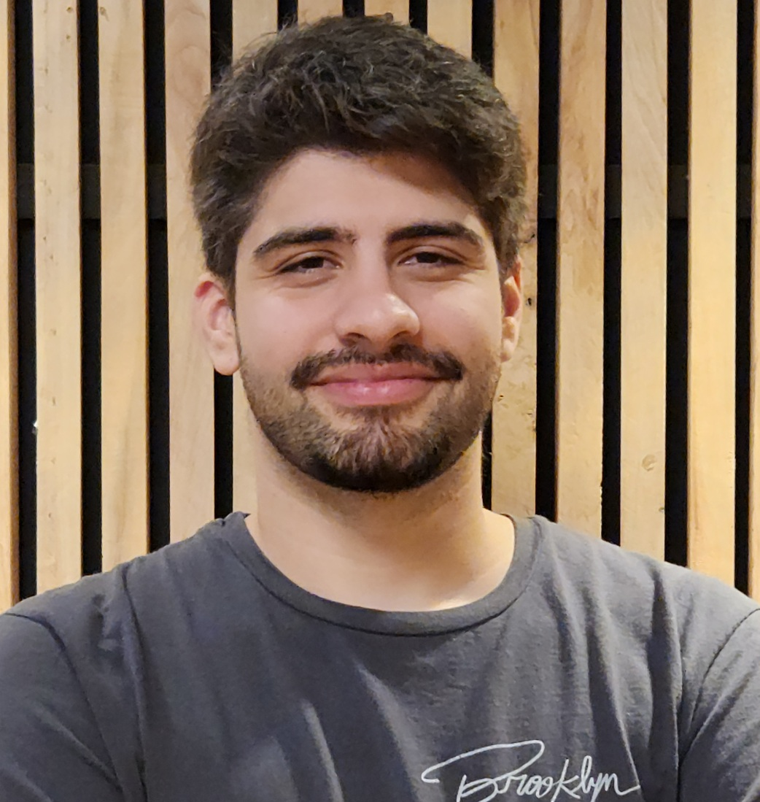
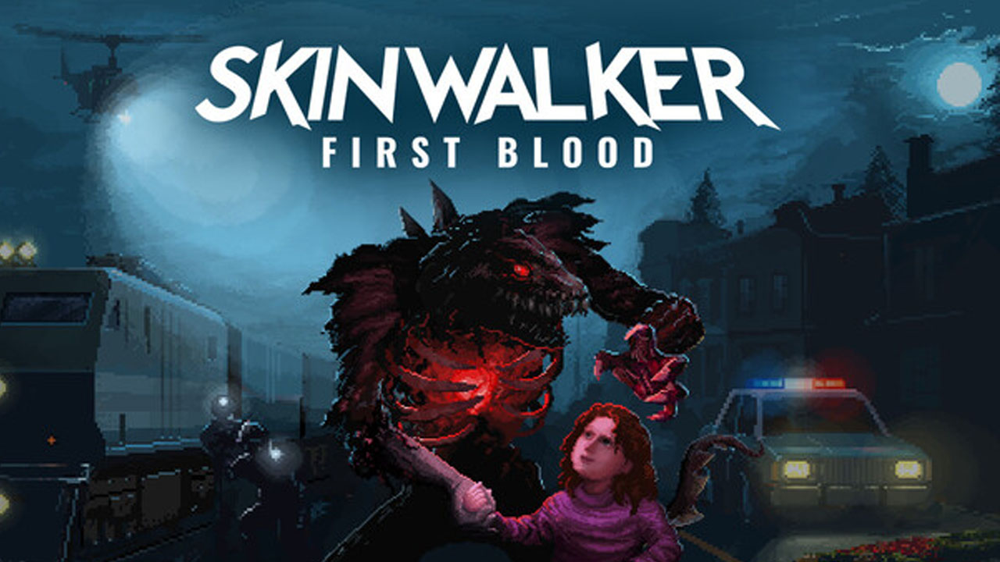
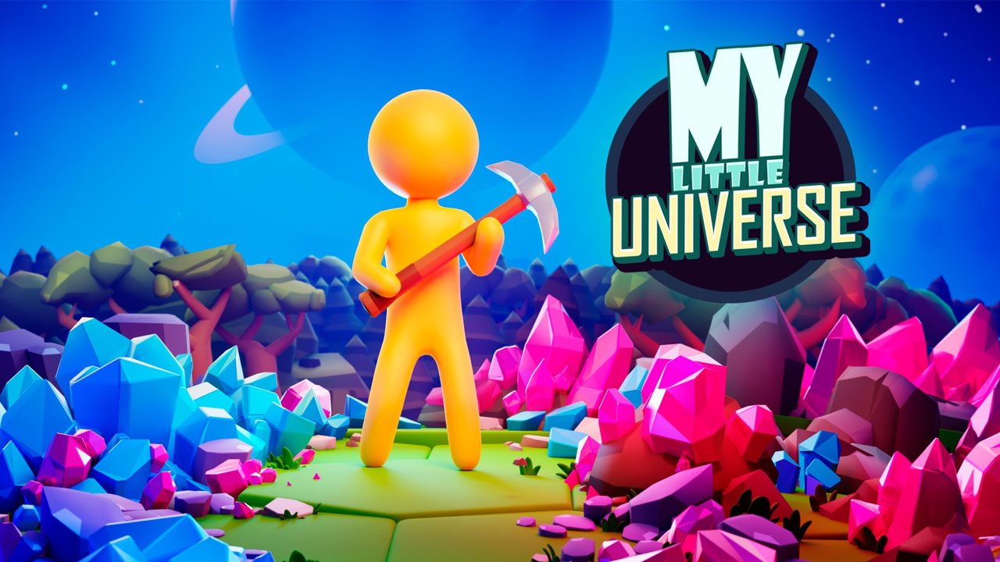
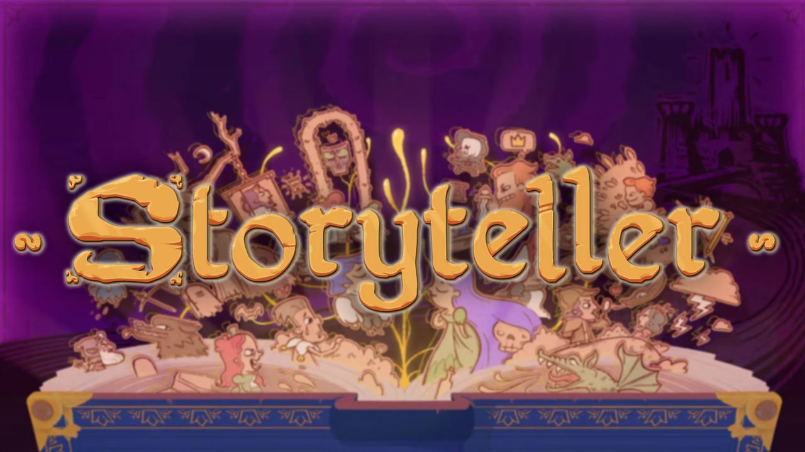
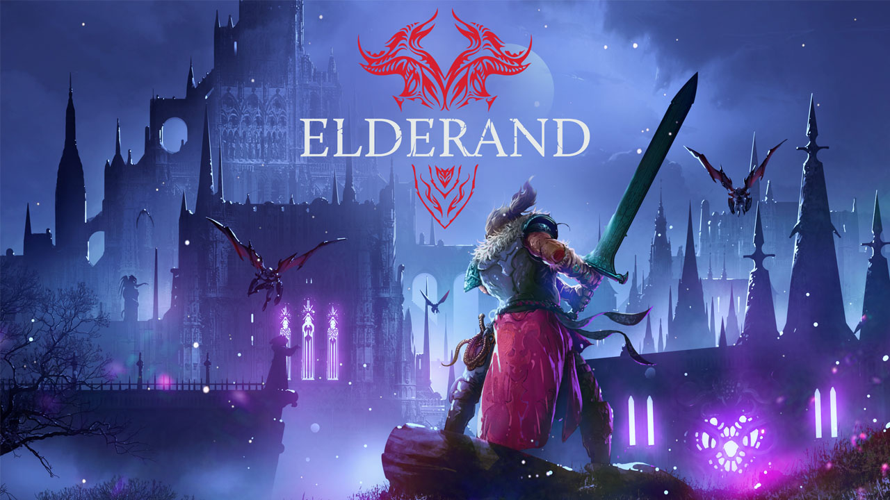
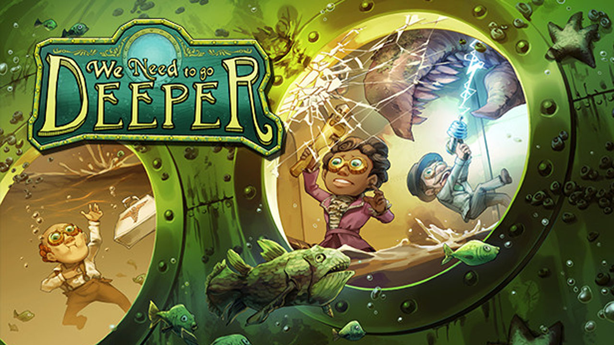

Desarrollador de Software & Project Manager

Desarrollador de Software y líder técnico con más de 3 años de experiencia coordinando equipos multidisciplinarios, gestionando la comunicación con stakeholders y entregando proyectos de software a tiempo — desde plataformas gubernamentales hasta títulos AAA internacionales.
Historial Profesional
Un historial de liderazgo de equipos, gestión de clientes y entrega de proyectos de software complejos en distintos sectores.
Lideré la entrega multiplataforma de más de 5 títulos de software en colaboración con publishers internacionales como EA, Annapurna Interactive, Team17 y Graffiti Games.
Lideré el desarrollo de una plataforma nacional de seguimiento y análisis de solicitudes de espacio aéreo para la Empresa Argentina de Navegación Aérea, como líder técnico y project manager.
Diseño y mantenimiento de herramientas de software internas para optimizar la eficiencia operativa dentro de un organismo del sector público.
Trabajo Seleccionado
Una selección de proyectos de software gestionados y ejecutados en distintas plataformas y clientes.

Lideré al equipo de porting en la entrega para consolas de última y nueva generación, además de Microsoft Store. El proyecto técnicamente más exigente a la fecha, con coordinación estrecha con el pipeline de QA y certificación de Team17.

Lideré al equipo a través de la entrega multiplataforma completa. El proyecto más exigente en términos de comunicación con el cliente, gestión de requisitos y alineación de stakeholders entre múltiples partes internacionales.

Contribuí a múltiples ports de plataforma, incluyendo el port de Netflix, el juego más descargado de Netflix en 2023. Coordiné la entrega entre los distintos requerimientos de plataforma y las expectativas del publisher.

Gestioné la entrega del port para Xbox: coordinación del equipo de QA, seguimiento de optimización de rendimiento y planificación de los hitos de certificación.

Gestioné el port para Nintendo Switch, coordinando el trabajo de optimización y la resolución de bugs de networking, con seguimiento de avances respecto a los requisitos de certificación.
Gestión integral del proyecto para una plataforma gubernamental de seguimiento y análisis de solicitudes de espacio aéreo. Coordinación de equipos, definición de requisitos e informes de seguimiento para un sistema de escala nacional.
Competencias
Capacidades clave desarrolladas en roles de gestión de proyectos, liderazgo técnico y atención a clientes.
Contacto
Disponible para roles de Project Manager, liderazgos técnicos y consultoría en gestión de proyectos de software.